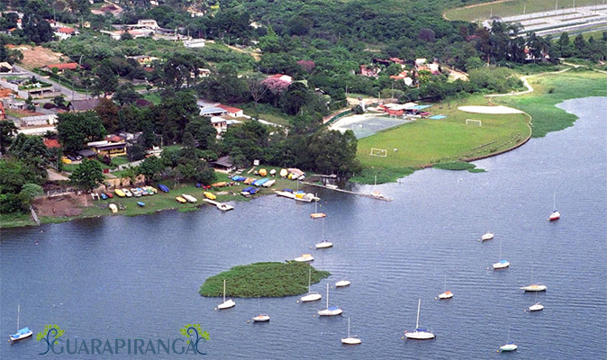

Construída pela São Paulo Tramway Light and Power Co., o reservatório Guarapiranga, foi inaugurado em 1908, para
auxiliar no abastecimento de energia da Usina hidrelétrica de Parnaíba.
Em 1928 após o crescimento que a cidade de São Paulo estava tendo o Reservatório Guarapiranga passou uma das fontes de
abastecimento de água potável da cidade de São Paulo.
O principal intuito era deter a água parada para o consumo de água potável, isso ajudou muito na economia da cidade pois
acabou trazendo muitos turistas e visitantes para conhecer a represa, a área acabou sendo desejada por muitas pessoas,
para poder construir a tão desejada casa próximo ao lago.
Em 1912 o São Paulo Yacht Club foi fundado próximo das barragens da represa, assim foi ampliando o turismo e a economia
ao redor da represa, ela foi o primeiro clube de Iatismo na represa.
Com o decorrer dos anos e a falta de uma politica correta ocorreram algumas invasões e iniciou construções de casas e
ocupações de terrenos na redondeza da Guarapiranga, isso acabou contribuindo com a poluição da represa e iniciou um grande
problema pela falta de esgoto tratado da região próximo do ano de 1980.
Com o decorrer das invasões a empresa (SABESP) teve que investir fortemente para o tratamento de água da represa pois a
poluição estava acabando com a qualidade da água, e também deixando ela não potável interferindo no abastecimento das
regiões da zona sul e sudeste da capital de São Paulo.
Após o governo ver a importância do local e ver tudo que tínhamos a perder, com a iniciativa da Subprefeitura de Socorro
e pelo governo de São Paulo em 2007 houve inicio de novas obras de revitalização do local aonde deu inicio ao novo
parque que fica ao redor da represa toda dando uma linda vista panorâmica.
Hoje a represa se encontra com muito mais cuidados e sempre preservando da melhor forma o local e o meio ambiente, mas
para isso, não depende apenas do governo e sim de todos nós com início de pequenas atitudes.
No ano de 2010 a empresa SABESP retirou 11 toneladas de lixo da represa Guarapiranga, foi uma quantidade enorme de lixo
que influencia na qualidade da água.
No ano de 2021 o Governo de São Paulo com parceria da SABESP iniciou uma obra de saneamento básico que estava prevista
um custo de 61 milhões de reais, para a despoluição que nos seres humanos vamos causando na natureza , a obra tem uma
previsão de 15 meses , isso se não tiver a influencia de novas causas para a poluição .
Os parques na região da represa vêm ganhando muita visibilidade e procura de muitas famílias para passar um final de
semana tranquilo, e também na pratica de esportes.
Com a ajudada do Governo de São Paulo a infra-estrura dos parques se mantem em ótimas condições, trazendo a beleza que
muitos turistas procuram, mesmo os parques sendo localizados na parte metropolitana.
Os parques da região ganharam muitos atrativos como:
Aproveite e traga sua família e amigos apara conhecer um dos parques da represa Guarapiranga e lembre se sempre contribuir com o meio ambiente.
Fonte da foto Governo-SP
Caso deseja baixar o PDF click aqui